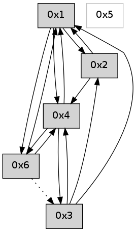

>> << IDX [start] -100 -25 -5 +0 +5 +25 +100 [545.405474186]
 Previous packets
540.002246 beacon02(adaf) #0 coord=01,02,05,03,04,06 cycle=432.0ms assoc 64 01 a7
540.012245 beacon05(adaf) #0 coord=01,02,05,03,04,06 cycle=432.0ms assoc 64 a7 8d
540.022247 beacon03(adaf) #0 coord=01,02,05,03,04,06 cycle=432.0ms assoc 64 3b a9
540.032246 beacon04(adaf) #0 coord=01,02,05,03,04,06 cycle=432.0ms assoc 64 9d 83
540.042246 beacon06(adaf) #0 coord=01,02,05,03,04,06 cycle=432.0ms assoc 64 e9 9f
----------------------------------------------------------------------
540.484392 beacon01(adaf) #0 coord=01,02,05,03,04,06 cycle=432.0ms assoc
-- color-indic=0 64 1c e8
540.494354 beacon02(adaf) #0 coord=01,02,05,03,04,06 cycle=432.0ms assoc 64 4d 17
540.504353 beacon05(adaf) #0 coord=01,02,05,03,04,06 cycle=432.0ms assoc 64 eb 3d
540.514353 beacon03(adaf) #0 coord=01,02,05,03,04,06 cycle=432.0ms assoc 64 77 19
540.524354 beacon04(adaf) #0 coord=01,02,05,03,04,06 cycle=432.0ms assoc 64 d1 33
540.534354 beacon06(adaf) #0 coord=01,02,05,03,04,06 cycle=432.0ms assoc 64 a5 2f
540.546050 [Hello(4): seq=340 sym=6,3,1 sysInfo= stat=6:1,0,0,0/3:4,0,0,0/1:0,0,0,0]
540.548781 [Hello(1): seq=239 sym=2,6,4 sysInfo= stat=2:4,0,0,0/6:15,0,0,0/4:6,0,0,0]
----------------------------------------------------------------------
540.976500 beacon01(adaf) #0 coord=01,02,05,03,04,06 cycle=432.0ms assoc
-- color-indic=0 64 d8 87
540.986461 beacon02(adaf) #0 coord=01,02,05,03,04,06 cycle=432.0ms assoc 64 89 78
540.996460 beacon05(adaf) #0 coord=01,02,05,03,04,06 cycle=432.0ms assoc 64 2f 52
541.006462 beacon03(adaf) #0 coord=01,02,05,03,04,06 cycle=432.0ms assoc 64 b3 76
541.016462 beacon04(adaf) #0 coord=01,02,05,03,04,06 cycle=432.0ms assoc 64 15 5c
541.026461 beacon06(adaf) #0 coord=01,02,05,03,04,06 cycle=432.0ms assoc 64 61 40
----------------------------------------------------------------------
541.468607 beacon01(adaf) #0 coord=01,02,05,03,04,06 cycle=432.0ms assoc
-- color-indic=0 64 86 e6
541.478567 beacon02(adaf) #0 coord=01,02,05,03,04,06 cycle=432.0ms assoc 64 d7 19
541.488568 beacon05(adaf) #0 coord=01,02,05,03,04,06 cycle=432.0ms assoc 64 71 33
541.498569 beacon03(adaf) #0 coord=01,02,05,03,04,06 cycle=432.0ms assoc 64 ed 17
541.508569 beacon04(adaf) #0 coord=01,02,05,03,04,06 cycle=432.0ms assoc 64 4b 3d
541.518568 beacon06(adaf) #0 coord=01,02,05,03,04,06 cycle=432.0ms assoc 64 3f 21
541.529677 [Hello(1): seq=240 sym=2,6,4 sysInfo= stat=2:5,0,0,0/6:15,0,0,0/4:6,0,0,0]
541.533898 [Hello(4): seq=341 sym=6,3,1 sysInfo= stat=6:1,0,0,0/3:5,0,0,0/1:1,0,0,0]
----------------------------------------------------------------------
541.960715 beacon01(adaf) #0 coord=01,02,05,03,04,06 cycle=432.0ms assoc
-- color-indic=0 64 42 89
541.970675 beacon02(adaf) #0 coord=01,02,05,03,04,06 cycle=432.0ms assoc 64 13 76
541.980677 beacon05(adaf) #0 coord=01,02,05,03,04,06 cycle=432.0ms assoc 64 b5 5c
541.990677 beacon03(adaf) #0 coord=01,02,05,03,04,06 cycle=432.0ms assoc 64 29 78
542.000676 beacon04(adaf) #0 coord=01,02,05,03,04,06 cycle=432.0ms assoc 64 8f 52
542.010679 beacon06(adaf) #0 coord=01,02,05,03,04,06 cycle=432.0ms assoc 64 fb 4e
----------------------------------------------------------------------
542.452824 beacon01(adaf) #0 coord=01,02,05,03,04,06 cycle=432.0ms assoc
-- color-indic=0 64 0e 39
542.462784 beacon02(adaf) #0 coord=01,02,05,03,04,06 cycle=432.0ms assoc 64 5f c6
542.472786 beacon05(adaf) #0 coord=01,02,05,03,04,06 cycle=432.0ms assoc 64 f9 ec
542.482786 beacon03(adaf) #0 coord=01,02,05,03,04,06 cycle=432.0ms assoc 64 65 c8
542.492785 beacon04(adaf) #0 coord=01,02,05,03,04,06 cycle=432.0ms assoc 64 c3 e2
542.502787 beacon06(adaf) #0 coord=01,02,05,03,04,06 cycle=432.0ms assoc 64 b7 fe
542.514450 [Hello(4): seq=342 sym=6,3,1 sysInfo= stat=6:1,0,0,0/3:6,0,0,0/1:1,0,0,0]
542.519461 [Hello(1): seq=241 sym=2,6,4 sysInfo= stat=2:6,0,0,0/6:15,0,0,0/4:7,0,0,0]
----------------------------------------------------------------------
542.944932 beacon01(adaf) #0 coord=01,02,05,03,04,06 cycle=432.0ms assoc
-- color-indic=0 64 ca 56
542.954893 beacon02(adaf) #0 coord=01,02,05,03,04,06 cycle=432.0ms assoc 64 9b a9
542.964894 beacon05(adaf) #0 coord=01,02,05,03,04,06 cycle=432.0ms assoc 64 3d 83
542.974895 beacon03(adaf) #0 coord=01,02,05,03,04,06 cycle=432.0ms assoc 64 a1 a7
542.984895 beacon04(adaf) #0 coord=01,02,05,03,04,06 cycle=432.0ms assoc 64 07 8d
542.994895 beacon06(adaf) #0 coord=01,02,05,03,04,06 cycle=432.0ms assoc 64 73 91
----------------------------------------------------------------------
543.437040 beacon01(adaf) #0 coord=01,02,05,03,04,06 cycle=432.0ms assoc
-- color-indic=0 64 87 51
543.447001 beacon02(adaf) #0 coord=01,02,05,03,04,06 cycle=432.0ms assoc 64 d6 ae
543.457001 beacon05(adaf) #0 coord=01,02,05,03,04,06 cycle=432.0ms assoc 64 70 84
543.467001 beacon03(adaf) #0 coord=01,02,05,03,04,06 cycle=432.0ms assoc 64 ec a0
543.477003 beacon04(adaf) #0 coord=01,02,05,03,04,06 cycle=432.0ms assoc 64 4a 8a
543.487002 beacon06(adaf) #0 coord=01,02,05,03,04,06 cycle=432.0ms assoc 64 3e 96
543.498678 [Hello(4): seq=343 sym=6,3,1 sysInfo= stat=6:1,0,0,0/3:7,0,0,0/1:2,0,0,0]
543.504641 [Hello(1): seq=242 sym=2,6,4 sysInfo= stat=2:7,0,0,0/6:15,0,0,0/4:7,0,0,0]
----------------------------------------------------------------------
543.929148 beacon01(adaf) #0 coord=01,02,05,03,04,06 cycle=432.0ms assoc
-- color-indic=0 64 43 3e
543.939109 beacon02(adaf) #0 coord=01,02,05,03,04,06 cycle=432.0ms assoc 64 12 c1
543.949110 beacon05(adaf) #0 coord=01,02,05,03,04,06 cycle=432.0ms assoc 64 b4 eb
543.959109 beacon03(adaf) #0 coord=01,02,05,03,04,06 cycle=432.0ms assoc 64 28 cf
543.969110 beacon04(adaf) #0 coord=01,02,05,03,04,06 cycle=432.0ms assoc 64 8e e5
543.979110 beacon06(adaf) #0 coord=01,02,05,03,04,06 cycle=432.0ms assoc 64 fa f9
543.994453 [Hello(6): seq=258 sym=4,1 asym=3 sysInfo= stat=4:15,0,0,0/1:0,0,0,0/3:0,0,0,0]
----------------------------------------------------------------------
544.421256 beacon01(adaf) #0 coord=01,02,05,03,04,06 cycle=432.0ms assoc
-- color-indic=0 64 0f 8e
544.431217 beacon02(adaf) #0 coord=01,02,05,03,04,06 cycle=432.0ms assoc 64 5e 71
544.441217 beacon05(adaf) #0 coord=01,02,05,03,04,06 cycle=432.0ms assoc 64 f8 5b
544.451217 beacon03(adaf) #0 coord=01,02,05,03,04,06 cycle=432.0ms assoc 64 64 7f
544.461217 beacon04(adaf) #0 coord=01,02,05,03,04,06 cycle=432.0ms assoc 64 c2 55
544.471218 beacon06(adaf) #0 coord=01,02,05,03,04,06 cycle=432.0ms assoc 64 b6 49
544.482876 [Hello(4): seq=344 sym=6,3,1 sysInfo= stat=6:2,0,0,0/3:8,0,0,0/1:3,0,0,0]
544.487577 [Hello(1): seq=243 sym=2,6,4 sysInfo= stat=2:8,0,0,0/6:0,0,0,0/4:7,0,0,0]
----------------------------------------------------------------------
544.913365 beacon01(adaf) #0 coord=01,02,05,03,04,06 cycle=432.0ms assoc
-- color-indic=0 64 cb e1
544.923326 beacon02(adaf) #0 coord=01,02,05,03,04,06 cycle=432.0ms assoc 64 9a 1e
544.933327 beacon05(adaf) #0 coord=01,02,05,03,04,06 cycle=432.0ms assoc 64 3c 34
544.943327 beacon03(adaf) #0 coord=01,02,05,03,04,06 cycle=432.0ms assoc 64 a0 10
544.953327 beacon04(adaf) #0 coord=01,02,05,03,04,06 cycle=432.0ms assoc 64 06 3a
544.963328 beacon06(adaf) #0 coord=01,02,05,03,04,06 cycle=432.0ms assoc 64 72 26